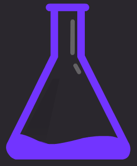

The Wayback Machine - https://web.archive.org/web/20210821103148/https://zonoslabs.com/

Speed
The Zonos GUI runs on the power of Zonos CLI with the simplicity of a UI
Task Grouping
Group tasks however you like, perfect for multi-site drops
Support
Speedy support is offered in our Discord server
Real Success
We have had tens of thousands of checkouts since launch
Supported sites
We currently support the sites listed.
Other stores are added regularly to ensure we get the highest amount of success for our users as possible. This enables users to get multiple pairs of the most sought after releases.
+
43einhalb, Allike, Awlab, Crocs, Footdistrict, Grosbasket, Office, Titolo, Disney and Kickz
FREQUENTLY ASKED QUESTIONS
How much does Zonos Labs cost?
Zonos Labs costs £179 with a monthly renewal fee of £15. Your renewal cannot be paused.
Can I sell Zonos Labs?
Yes, you can unbind and sell your key through our dashboard. However, from the moment a key is purchased from us, there is a 2 month cooldown period during which you cannot unbind.
What operating Systems are supported?
Zonos Labs currently works on Windows computers.
Where can I buy Zonos Labs?
We are currently sold out. To be notified of when we restock, please turn on notifications for our twitter account https://twitter.com/zonoslabs